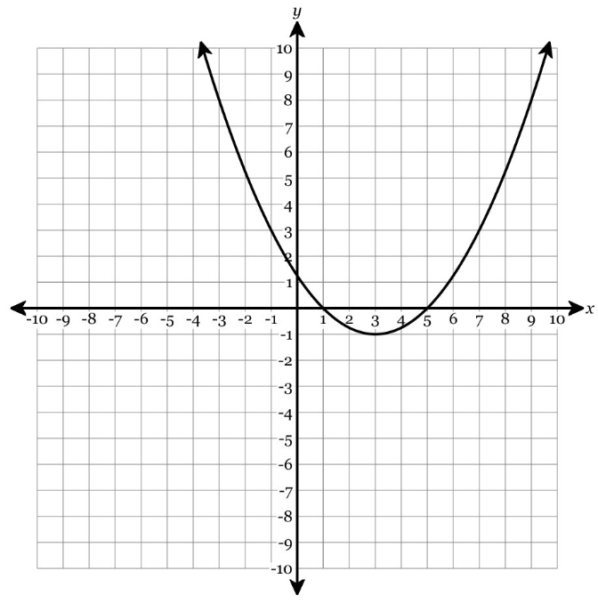

For each equation, calculate the discriminant \(\Delta=b^2-4ac\). Then state the number of real solutions.
| Equation | \(\Delta\) | Number of real solutions | Graph meaning |
|---|---|---|---|
| \(x^2-6x+8=0\) | |||
| \(x^2+4x+4=0\) | |||
| \(x^2+2x+5=0\) |
Sort the equations by discriminant sign: positive, zero, or negative. Then explain what each sign means for x-intercepts.
Equations: \(x^2-8x+12=0\), \(x^2-8x+16=0\), \(x^2-8x+20=0\), \(2x^2-5x-3=0\)
| \(\Delta>0\) | \(\Delta=0\) | \(\Delta<0\) |
|---|---|---|
A student says, “If the discriminant is negative, the quadratic has no solutions.”
Complete the discriminant table.
| Discriminant value | Number of real solutions | Type of x-intercept behavior |
|---|---|---|
| \(49\) | ||
| \(0\) | ||
| \(-16\) | ||
| \(5\) |
Which rows show two real solutions? Which row shows no real x-intercepts?
Use the graph and the equations to connect x-intercepts to discriminant meaning.

Which equation has exactly one real solution? Which has no real solutions? Show discriminant evidence.
Then write one sentence explaining why the discriminant is a prediction tool before solving.